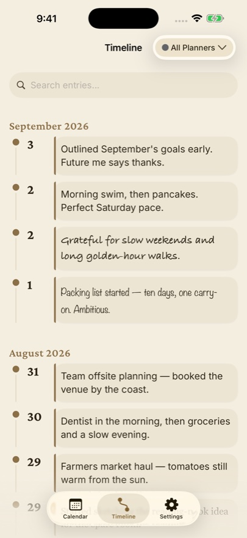

The Pomodoro technique is sound — work in focused blocks, rest briefly, repeat — but the apps built around it tend to turn a simple discipline into a dashboard. Streaks, forests, leaderboards. If all you want is to know how many real blocks of work a day contained, and to see that number next to what you were working on, you need a counter and a calendar.

The setup
- Make a sticker: Deep block. Pick a colour you like seeing a lot of.
- Put it on your Apple Watch face as a Sticker Stamp complication, or on the iPhone Home Screen as a Sticker Stamp widget — whichever sits closer to where you work.
- Run your block on any timer you like, even the Clock app. When it ends, tap the stamp. Deep block ×1. Take the break. Repeat.
Why count blocks and not minutes
Minutes lie. A "four-hour work day" with Slack open is maybe ninety minutes of thought. A block only counts if it was a block, and you're the one deciding — the tap is a small act of honesty. Cal Newport's observation that most people can sustain about four hours of genuine deep work a day matches what stampers see: the good days show ×4 to ×6, and pushing past that rarely shows up as better work the next day.
Pair it with its opposite
The most useful version of this practice keeps two stickers: Deep block and Distraction. Stamp the first when a block completes, the second whenever focus breaks — a pinch on the wrist, no screen. Two counts on every date. The ratio between them, week over week, is the clearest picture of your attention you'll get, and it costs a few taps a day.
Then write one line
Under the day's stamps, add a sentence: what the blocks were for. Months later, filter the timeline by Deep block and you'll have a record of what you actually built, dated, with the effort counted. That's a work journal — the kind people mean to keep and never do, because it used to require writing.